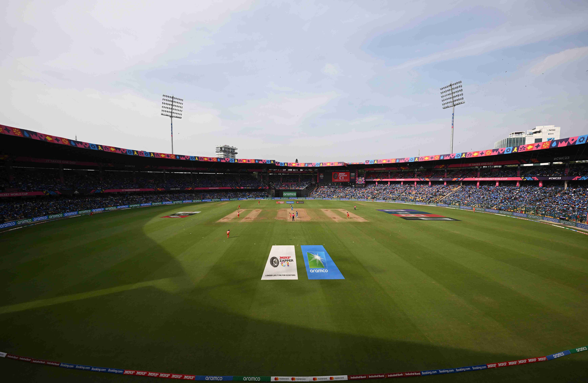

|  | AboutWith boundary sizes of around 65 metres, M. Chinnaswamy Stadium is expected to offer some of the highest-scoring innings of the tournament. Records could be broken in a repeat of 2011, where Kevin O’Brien crashed the fastest hundred in an ODI World Cup in just 50 balls as Ireland chased down 328 to beat England. The stadium has been home to the National Cricket Academy since 2000, producing some of the finest international Indian talent seen this Venue Details
|
Tourist place:
By far liking this place?, why not explore more, visit the iconic tourist spot that offer an immersive cultural and scenic experience, especially if you are here for Cricket ! along with the thrill of watching a live match at the stadium, enjoy exploring the heritage and attractions nearby, there is so much to dive in. From historic landmark to scenic park, every place is a gateway to unforgettable memories. So while you catch your favorite team in actions, don't miss out the opportunity to visit the must see spots around!
Click here
Hotels:
Relax and recharge in the comfort of the affordable, elite hotels located conveniently close to the cricket stadium as well as the tourist destination. Our recommended accommodation cater to every traveler, with amenities and services that add ease to your stay. Whether you are here for a match or a leisurely holiday, these hotels provide the ideal base to rest and explore. Enjoy the best of both worlds - close proximity to the action and easy access to the area's top tourist spots, making your trip the best one you ever had so far!
Click here